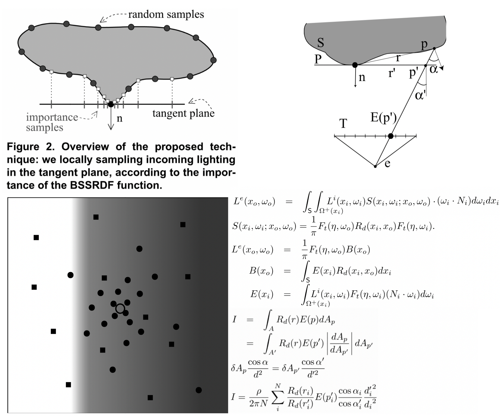
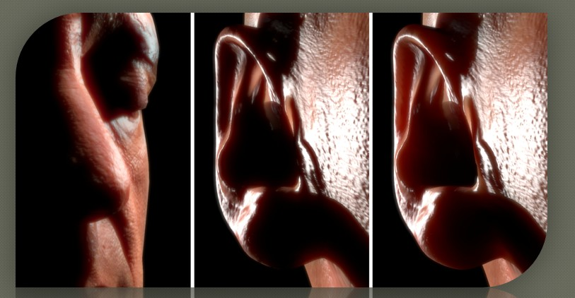

Skin Rendering
Table of Contents
- 皮肤医学结构
- 2007 Gem3Skin
- 2009 Efficient rendering of local subsurface scattering
- 2011 Pre-Intergrating the Effects of Scattering
- Improve Pre-Intergrating
- CLX2 Skin
- 2009 ScreenSpace Perceptual Rendering of Human Skin
- 2010 Real-Time Realistic Skin Translucency
- TODO 2015 Separable-SSS
- TODO 2018 Unity Efficient screen space subsurface scattering
- Misc
- 参考资料
Skin Rendering note.
<!– more –>
皮肤医学结构
皮肤分为 表皮 epidermis，真皮 dermis 和皮下组织 subcutaneous tissue
表皮的分层
角质层 Stratum corneum
位于表皮的最外层，由 5-20 层的扁平无核细胞组成，胞内细胞器结构消失，充满角蛋白。
透明层 Stratum lucidum
仅见于掌跖。由 2-3 层扁平无核细胞组成。
颗粒层 Stratum granulosum
由 2-4 层梭形细胞组成，细胞内含有透明角质颗粒。
棘层 Stratum spinosum
由 4-10 层多角形细胞组成，细胞间桥明显呈棘状。
基底层 Stratum basale
位于表皮的最下层，为一层立方形或圆柱状细胞，细胞的长轴与基底膜带垂直，胞核呈卵圆形，胞浆内含有黑素颗粒，核分裂象常见。
具有不断分裂增殖的能力，因此又称为生发层。由基底层移行至颗粒层最上层约需 14 天，再移行至角质层表面脱落又需 14 天，称为表皮通过时间。


2007 Gem3Skin
- 原文链接 Advanced Techniques for Realistic Real-Time Skin Rendering https://developer.nvidia.com/gpugems/GPUGems3/gpugems3_ch14.html
下图是使用 2 个 Gaussian 函数，4个 Gaussian 函数来近似 Dipole 模型推导出的 绿光在大理石中散射的 diffuse profile：

下图使用 6 个高斯函数来近似 Diffusion profile。rgb 三个通道都是用相同的这 6 个高斯函数，但是对应的高斯函数的权重不同。

实现总结
高光
高光使用了基于物理的 BRDF，为了加速计算，对 BRDF 进行了预计算。
float PHBeckmann(float nDotH, float roughness) { float alpha = acos(nDotH); float ta = tan(alpha); float r2 = roughness * roughness; float val = 1.0 / (r2*pow(nDotH, 4.0))*exp(-(ta*ta) / r2); return 0.5*pow(val, 0.1); }
Diffuse
计算 RhodtTexture
uv.u 为 NoL
uv.v 为 roughness
计算 BRDF 在半球空间的积分，得到所有被反射的比例，从而就可以得到剩余的被散射的比例。
计算 IrradianceTexture
在贴图空间，计算被散射的能量。渲染模型，结果按照模型 UV 输出（这就是所谓的贴图空间渲染）。
v2f vert (appdata v) { v2f o; #if UNITY_UV_STARTS_AT_TOP o.pos = float4((v.uv0 * 2 - 1)*float2(1,-1), 0, 1); #else o.pos = float4(v.uv0 * 2 - 1, 0, 1); #endif o.tex = v.uv0; o.posWorld = mul(unity_ObjectToWorld, v.vertex); o.eyeVec.xyz = _WorldSpaceCameraPos - o.posWorld.xyz; return o; }
计算 StretchCorrectionTexture
在贴图空间，矫正贴图空间的模糊(曲率比较大的地方，相邻点的空间距离比其贴图上的距离要小)
// 同样是在贴图空间进行计算，得到贴图被拉伸的程度(其实也是模型本身的曲率) fixed4 frag (v2f i) : SV_Target { float3 posWorld = i.posWorld; float3 derivU = ddx(posWorld); float3 derivV = ddy(posWorld); float stretchU = 1 / length(derivU) * _StretchScale; float stretchV = 1 / length(derivV) * _StretchScale; return float4(stretchU, stretchV, 0, 1); }
计算 SeamMaskTexture
使用(0,0,0,0) clear StretchTextureRT，生成 StretchTexture 时 alpha 始终填充 1，这样接缝外的 alpha 就会为 0。
在贴图空间，将所有 StretchTexture 的 alpha 通道相乘就可以得到 SeamMask。
对 StretchTexture 和 IrradianceTexture 进行模糊
在贴图空间，对 IrradianceTexture 进行高斯模糊来模拟散射。一共使用 6 个高斯函数，RGB 通道使用不同的权重。6个高斯函数近似 multi-dipole profiles
2D Blur to 1D Blur
高斯模糊近似 R(d)函数
R(d)r = 0.078*G(sqrt(7.41), d) + 0.358*G(sqrt(1.99), d) + 0.113*G(sqrt(7.41), d) + 0.118*G(sqrt(0.358), d) + 0.100*G(sqrt(0.0484), d) + 0.233*G(sqrt(0.0064), d);


下面文件为一维高斯函数图形：
./SkinRendering/002_gaussian_function.ggb
代码实现
// 在贴图空间，先对StretchTexture进行模糊，然后再对IrradianceTexture进行模糊 fixed4 frag (v2f i) : SV_Target { float scale = _MainTex_TexelSize.x * _GaussianWidth / _BlurStepScale; float2 uvDelta = float2(scale, 0.0); #if defined(CONV_V) uvDelta.xy = uvDelta.yx; #if defined(ENABLE_STRETCH_CORRECTION) uvDelta.y *= tex2D(_StretchTex, i.uv).y; #endif #else #if defined(ENABLE_STRETCH_CORRECTION) uvDelta.x *= tex2D(_StretchTex, i.uv).x; #endif #endif float2 coords = i.uv - uvDelta*3.0; float4 sum = 0.0; // 期望为0，标准差为1 的高斯函数离散的函数值 float curve[7] = { 0.006, 0.061, 0.242, 0.383, 0.242, 0.061, 0.006 }; for (int j = 0; j < 7; j++) { float4 tap = tex2D(_MainTex, coords); sum += curve[j] * tap; coords += uvDelta; } return sum; }
Translucent Shadow Maps
- 生成 TSM
从光源方向渲染模型（设置 ViewProjection 矩阵为 LightVP），将模型的 depth 和 uv 写入到 TSM RenderTarget。 - 读取 TSM
渲染模型时，将模型的 worldPos 转化到光源投影空间（LightVP * worldPos）得到 lightProjPos，利用 lightProjPos.xy/lightProjPos.w 就可以对上一步生成的 TSM 进行采样。此时得到的数据为模型当前渲染的点沿光照方向的背侧的点。如下图： - 应用 TSM
得到背侧点的 uv 和 depth 后，使用 uv 采样 IrradianceTexture 可得到背侧点的散射能量。利用这些信息计算出从背侧散射到当前点的能量。
参考资料
- Advanced Techniques for Realistic Real-Time Skin Rendering https://developer.nvidia.com/gpugems/GPUGems3/gpugems3_ch14.html
- 角色渲染技术——皮肤 https://zhuanlan.zhihu.com/p/27014447
- GPU Gems 3 真实感皮肤渲染技术总结 https://zhuanlan.zhihu.com/p/42433792
高斯卷积核求解
- 如何通俗易懂地解释卷积？ https://www.zhihu.com/question/22298352
- Gaussian filter, or Gaussian blur http://www.librow.com/articles/article-9
- 高斯函数 https://www.zhihu.com/question/33214189
- 理解图像卷积操作的意义 https://blog.csdn.net/chaipp0607/article/details/72236892?locationNum=9&fps=1
- 高斯卷积核计算器 http://dev.theomader.com/gaussian-kernel-calculator/
- 将 2D 卷积核转化为 1D https://blogs.mathworks.com/steve/2006/11/28/separable-convolution-part-2/
- 2D GaussianBlur To 1D https://stackoverflow.com/questions/25216834/converting-2d-mask-to-1d-in-gaussian-blur
2009 Efficient rendering of local subsurface scattering
该方法是屏幕空间的方法。对于当前的 skin pixel p，使用重要性采样生成一系列样本 pi（这些样本的 Irradiance 会散射到 p），利用蒙特卡洛积分来计算次表面散射。

2011 Pre-Intergrating the Effects of Scattering
Pre-integrating the Effect of Scattering
我们没有通过收集渲染位置处所有方向的入射光来实现次表面散射。而是探索预积分皮肤中的次表面散射效果。
只有三件事情会引入可见的散射：
- 模型曲率的变化
- normal map 中的突起
- 遮挡光导致的阴影
Scattering and Diffuse Light
nDotL 是主要导致入射光变化的原因，其使得散射变得明显。
我们考虑通过球谐光照模拟所有方向上的光，以此来预计算表面上任意一点的散射光效果。但是球谐方式只能高效地表示低频率变化的光，对于高频变化的光需要很多系数。因此，我们放弃了预计算散射效果，而选择预计算表面形状子集的散射衰减，并在渲染时确定最好的衰减.
我们在运行时可以计算表面的曲率，其最大程度决定了光滑表面的散射效果。
为了测量曲面上的散射，我们添加了曲率作为第二个参数。我们简单从一个方向照射给定曲率的球面，并测量各个角度上累计的光照。
下图为散射光公式推导：

当前模型假设所有的皮肤和球相似，但是皮肤可以为任意拓扑结构。换句话说，当前模型假设给定点的散射由该点自身的曲率决定，而事实上是由该点周围所有点的曲率决定。因此，该模型在平滑的表面上(曲率变化不大的表面上)效果可以，但是曲率变化比较大时，就不适用了。幸运的是，大多数皮肤模型都有两层：使用几何表示光滑的表面，使用 normal map 表示表面细节。
- 如何简明地解释曲率（curvature）？ https://www.zhihu.com/question/25952605
Scattering and Normal Maps
皮肤上小的皱纹、毛孔通常通过 normal map 来表示。因为小折痕的法线总是要回到表面主法线方向，从小折痕反射的散射光和折痕更宽的不散射表面反射的光看起来很像。因此可以通过模糊 normal 来近似皱纹、毛孔等小褶皱照成的散射。对于不同波长的光，diffusion profiles 不同，模糊 normal 的方式也不同。
从实际的物体抓取 normal 贴图时，发现 normal 会向表面法线偏转，而且不同波长的光偏转程度不同，红光比绿光偏转程度大。还观察到使用多个波长的光抓取的多个 normal 进行渲染要比使用单个 normal 效果要好。
我们的做法为，假定原始的 normal map 是精确的表面法线，对其进行 blur 而得到每个波长对应的 normal。因此，不能为了得到更光滑的效果，而直接提供 blur 过的 normal map 做原始的 normal map，否则再对其进行 blur 得到的每个波长的 normal 将不正确。
使用 diffusion profile 直接对 normal map 进行 blur 是不可行的，因为光照对于表面法线不是线性过程。需要使用 LEAN 或 CLEAN。
值得注意的是，在法线贴图的过滤区域内，阴影/入射光/散射光项为常数时，使用非归一化的 normal 是一个可行的近似，此时我们有如下关系式：

上面关系式不是总成立的，因为 diffuse lighting 包含一个自阴影项 max(0, N.L)来取代上式中的 N.L。尽管如此，当法线过滤区域内都没阴影或都有阴影时，使用非归一化的法线依然是正确的。
我们开发了一种近似的方法，其只用一张包含 mipmap 的法线贴图。使用该优化方法时，specular normal 的采样依然不变，但同时使用另一个采样器采样高一级的 mipmap 得到 red normal。然后将 specular normal 和 red normal 变换到 tangent 空间，对他们进行混合得到 green 和 blue normal。最后的 diffuse-lighting 计算需要执行三次（red-diffuse blue-diffuse green-diffuse）。
如果法线贴图只包含很小的细节，甚至可以使用几何法线来代替 red normal。
Shadow Scattering
光散射到阴影是真实感皮肤的重要特性之一。使用一点小技巧就可以预计算阴影边界上的散射效果。
我们可以将阴影映射算法当作一个衰减函数。当衰减为完全黑或完全白，对应着完全遮挡和完全不遮挡。我们可以重新设置完全黑和完全白之间的值。特别地，如果我们确定我们的阴影过滤器创建的半影尺寸足够容纳大部分的 diffusion profile，我们可以缩小原始半影的尺寸，多出来的尺寸用于基于 diffusion profile 的散射。

为了计算精确的衰减，我们将阴影半影和 diffusion profile 进行预积分。我们将阴影半影 P()定义为一个一维衰减函数，该函数来自于使用阴影贴图映射的 blur kernel 对硬阴影边界的过滤。假定阴影映射的 kernel 为单调递减的，则对应的衰减函数也是单调递减，这样就可以对阴影半影 P()求反函数 \(P^{-1}()\) 。这样就可以通过给定的阴影值获得对应的半影中的位置。例如，如果阴影映射为 BoxFilter，则阴影半影函数 P()就是一个线性的斜坡，此时对应的反函数 \(P^{-1}()\) 也是一个线性的斜坡。
我们假定了阴影是投射在一个平面上的，如果表面倾斜度很大，半影尺寸将比我们预计算时使用的值大很多。因此，我们为阴影衰减贴图增加了第二个维度，其表示世界空间中的半影尺寸。最后，我们生成阴影 LUT 的公式如下：

半影宽度可以通过表面和对应光源的夹角得到，或者直接对阴影值进行求导。
当半影被拉升映射到倾斜度很高的表面时，此时提供的散射衰减空间更大。可以对半影宽度值进行截取，以保证其在 LUT 贴图范围内。
Improve Pre-Intergrating
2013 Env Light Pre-Intergrating Scattering
- 将皮肤次表面散射系数转化为 SH 系数
- 计算 SH 环境光时，用 LightSH 系数*ScatterSH 系数就得到此表面散射后的环境光
原理如下推导：
Tips：计算间接光照的 diffuse 部分时，会传入当前顶点的世界坐标系下的法线 wNormal，需要将 S(θ,r)的+z 方向和 wNormal 对齐。也就是上图中给 S 乘了一个变换系数。
Approximate Pre-Intergrating Scattering
CLX2 Skin
BRDF
Fresnel
F 将 5 次方转化为了 exp2 操作，来优化性能。
有些 GPU 通过表查找来实现 exp2，exp2 只需要 1 条指令。
float3 F = specColor + saturate(50 * specColor.g - specColor)*exp2((-5.55473*VoH - 6.98316)*VoH);
- 粗略判断 Shader 每条代码的成本 https://zhuanlan.zhihu.com/p/34629262
- Fresnel Equations, Schlick Approximation, Metals, and Dielectrics http://psgraphics.blogspot.com/2020/03/fresnel-equations-schlick-approximation.html
D
GGX 法线分布。使用两个粗糙度输入计算两个法线分布，最终的 D 项为 D1*1.5 + D2*0.5，因为 G 中的分母为 0.25（本应该为 0.5），所以此处 D1 和 D2 缩放因子的和为 2。
Crystal 中 D 项为 D1+D2。
- D1 使用的是未缩放的粗糙度
- D2 使用了缩放后的粗糙度
roughness 没用执行平方操作(即：需将 perceptualRoughness 转化为公式中使用的 roughness)
G
G 项和 SmithJointApprox 类似，但是系数不同。
Refract Light
// normal 为顶点法线光栅化插值的结果 (低频法线) float3 RefractionNoL = saturate(0.6 + dot(normal, light.dir)); // attenuation 为mainLight的阴影项 float3 RefractionIrradiance = light.color*thickness*_SSSColor*RefractionNoL*RefractionNoL*attenuation;
SSS
// SSS1 为直接使用 NoL对 SSSLUT进行采样得到的值 // SSS2 为相当于对阴影边界散射的处理，SSS强度越大，阴影边界变化曲线越趋近抛物线 // DoL 为法线贴图中存储的法线（高频法线）与mainLight的点积 float LutUV2 = attenuation + (DoL-NoL) * attenuation; float3 SSS_Lut2 = float3(lerp(sqrt(LutUV2.r), LutUV2.r, 1 - _SSSIntensity), LutUV2.rr); SSS_Lut2 *= SSS_Lut2;

2009 ScreenSpace Perceptual Rendering of Human Skin
实现细节
Blur Kernel width
Blur Kernel width 需要考虑下面两个情况
- 远处的物体应该使用窄的 kernel
- depth map 中梯度变化大的也需要使用窄的 kernel
使用下面的公式来实现：

从上面公式可以看到，深度梯度增加会减小 kenel 宽度；这就限制了背景像素和 skin 像素进行卷积。在物体的边界处，深度梯度会很大，kernel 宽度就会很小。
上面公式中的α值受下面一些因素影响：
- 物体在 3D 空间中的尺寸
- 摄像机的 FOV
- viewport size
下图展示了α和β分别变化对最终渲染结果的影响：

float4 BlurPS(PassV2P input, uniform float2 step) : SV_TARGET { // Gaussian weights for the six samples around the current pixel: // -3 -2 -1 +1 +2 +3 float w[6] = { 0.006, 0.061, 0.242, 0.242, 0.061, 0.006 }; float o[6] = { -1.0, -0.6667, -0.3333, 0.3333, 0.6667, 1.0 }; // Fetch color and linear depth for current pixel: float4 colorM = colorTex.Sample(PointSampler, input.texcoord); float depthM = depthTex.Sample(PointSampler, input.texcoord); // Accumulate center sample, multiplying it with its gaussian weight: float4 colorBlurred = colorM; colorBlurred.rgb *= 0.382; // Calculate the step that we will use to fetch the surrounding pixels, // where "step" is: // step = sssStrength * gaussianWidth * pixelSize * dir // The closer the pixel, the stronger the effect needs to be, hence // the factor 1.0 / depthM. float2 finalStep = colorM.a * step / depthM; // Accumulate the other samples: [unroll] for (int i = 0; i < 6; i++) { // Fetch color and depth for current sample: float2 offset = input.texcoord + o[i] * finalStep; float3 color = colorTex.SampleLevel(LinearSampler, offset, 0).rgb; float depth = depthTex.SampleLevel(PointSampler, offset, 0); // If the difference in depth is huge, we lerp color back to "colorM": float s = min(0.0125 * correction * abs(depthM - depth), 1.0); color = lerp(color, colorM.rgb, s); // Accumulate: colorBlurred.rgb += w[i] * color; } // The result will be alpha blended with current buffer by using specific // RGB weights. For more details, I refer you to the GPU Pro chapter :) return colorBlurred; }
渲染流程和贴图空间 SSS 的对比


缺陷

- 特定配置下会产生小的光晕、光环 例如，上图第一幅图鼻子和阴影接壤的地方。这是因为屏幕空间中相邻的像素在三维空间中可能并不相邻导致的。
- 该算法没有考虑薄的、曲率高的地方的一些特性。 例如上图第二副图中的耳朵部位，上图第三幅图为使用 TSSSS 渲染的结果，其通过修改 Translucent Shadow Map 考虑了薄部位的特性。
2010 Real-Time Realistic Skin Translucency
算法基于下面 4 点观察
- 对于很多物体，我们可以对当前点的法线取反来近似背面点的法线。当正面和背面平行时，该近似是准确的。
- 从背面照亮物体，我们从正面看时，观察者无法获得背面辐射照度的准确信息。
- 材质的自由程很小或者几何体适度的厚时（例如：皮肤），透射是非常低频的现象。这是因为光经过物体内部时被散射，将光的大多数高频信息给消去了。
- 对于人类皮肤，在表面上 albedo 不会有非常明显的变化，其维持在相似的皮肤色调上。
基于上面 4 点观察，算法做出如下 3 点假设
- 对正面法线取反来近似背面法线。 (基于观察 1)
- 利用某种启发式方法我们可以预测背面的 Irradiance，并且很难注意到预测结果和真实结果的不同。 (基于观察 2)
- 我们可以使用正面的 albedo 近似计算背面的 irradiance。（基于观察 2，4）
即使我们使用高频法线来计算背面的 Irradiance，我们依然得到的是低频的透射光，因此我们假设可以使用低频法线得到近似的结果。我们使用顶点法线来计算背面的 Irradiance，而不是 normal map 中存储的法线，这样就可以舍去 Irradiance 的高频部分。此时，背面的 Irradiance 变化非常小，因此可以取单个值来近似整个卷积。(基于假设 3)
公式推导

实现细节
尽管使用取反的 Normal 来计算透射率避免了双重贡献（相对于两次都使用不取反 Normal 进行计算）。但是，使用取反 Normal 导致反射照亮区域和只受透射照亮的区域之间的过度不平滑。在过度区域，N.L 和 -N.L 都为 0。为了避免突然的照明变化，我们通过下面方式扩大透射照亮的区域：
float3 T(float s) { return float3(0.233, 0.455, 0.649) * exp(-s*s/0.0064) + float3(0.1, 0.336, 0.344) * exp(-s*s/0.0484) + float3(0.118, 0.198, 0.0) * exp(-s*s/0.187) + float3(0.113, 0.007, 0.007) * exp(-s*s/0.567) + float3(0.358, 0.004, 0.0) * exp(-s*s/1.99) + float3(0.078, 0.0, 0.0) * exp(-s*s/7.41); } float s = scale * distance(pos, Nvertex, i); float E = max(0.3 + dot(-Nvertex, L), 0.0); float3 transmittance = T(s) * lights[i].color * attenuation * albedo.rgb * E; // We add the contribution of this light M += transmittance + reflectance;
TODO 2015 Separable-SSS
该论文提到出了两类方法，都只需要两个 1D 的卷积操作。第一类可以得出高质量的模拟效果，第二类则在效果和易操作性上做了权衡。
论文发现，可以精确模拟 diffusion 的 kernels 通常在数学上是不可分离的，但是可以使用 low-rank factorization(低秩分解)来重建。下图展示了对模拟皮肤次表面散射的 diffuse reflectance profile 进行奇异值分解后，奇异值的衰减情况。从图可以看出，只有和前几个奇异值相关的分量对 profile 的重建有明显贡献。这使得低秩近似是可行的。

TODO 2018 Unity Efficient screen space subsurface scattering
参考链接
- Cross Bilateral Filter http://techtidings.blogspot.com/2012/03/jointcross-bilateral-filter.html
Misc
Normal Map Mipmap
该文件展示了 normal map 的混合：
./SkinRendering/111_normal_map_lerp.ggb
- Normal Map Mipmap https://www.jianshu.com/p/efabea28ed1a
- Mipmapping_Normal_Maps https://developer.download.nvidia.com/whitepapers/2006/Mipmapping_Normal_Maps.pdf
- Spectacular-Specular-LEAN-and-CLEAN video https://www.gdcvault.com/play/1014557/Spectacular-Specular-LEAN-and-CLEAN
- Spectacular-Specular-LEAN-and-CLEAN ppt https://fdocuments.in/document/spectacular-specular-lean-and-clean-specular-highlights-dan-baker-firaxis.html
NoLWrap
下面文件展示了 nol wrap 的曲线：
./SkinRendering/111_nol_wrap.ggb
参考资料
- 《GPU Gems 3》：真实感皮肤渲染技术总结 https://zhuanlan.zhihu.com/p/42433792
- 低成本皮肤渲染 Pre-integrated Skin https://zhuanlan.zhihu.com/p/35628106
- Pre-Integrated Skin http://simonstechblog.blogspot.com/2015/02/pre-integrated-skin-shading.html
- separable-sss https://github.com/iryoku/separable-sss
- GPU Gem3 Advanced Techniques for Realistic Real-Time Skin Rendering
- GPU Pro 1 Screen-Space Subsurface Scattering
- GPU Pro 2 Part2 Chapter1 Pre-Integrated Skin Shading
- GPU Pro 5 Part4 Chapter1 Realistic Real-Time Skin Rendering on Mobile
- SoulShell：实时虚拟角色 https://zhuanlan.zhihu.com/soulshell
- 天刀渲染 https://zhuanlan.zhihu.com/p/295347623?utm_source=com.alibaba.android.rimet
- sss-intro https://therealmjp.github.io/posts/sss-intro/
- Exploring Character Art Workflows: Skin Texturing Tips https://80.lv/articles/exploring-character-art-workflows-skin-texturing-tips/